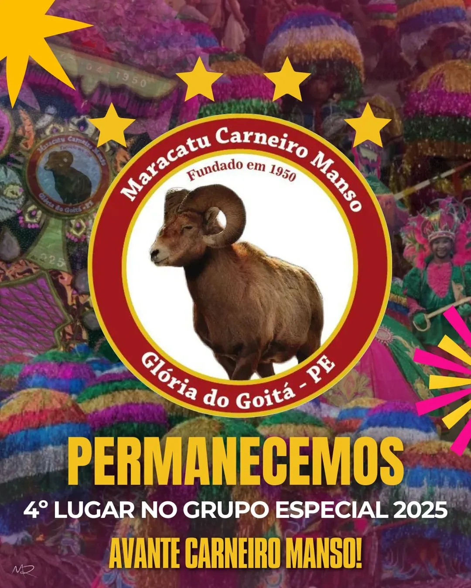

Premiações
★

4 anos no grupo 1
2011
2014
2017
2023
2024
★
Patrimônio Cultural Imaterial
★
Vencedor do Prêmio Culturas Populares 2008 Humberto de Maracanã
★
Título de Utilidade Pública de Glória do Goitá-PE 2024.